0. 課程資訊與教材
| 課程名稱 | 生成式 AI 應用電台・訂閱制第三季 釣魚選股補充課程 |
|---|---|
| 直播日期 | 2026/09/04（四），本段錄影全長 2 小時 15 分 06 秒 |
| 講師 | 益師傅（楊俊益，暱稱 ECF；智慧立方有限公司） |
| 參與人數 | 約 90 位學員（Teams 線上直播，錄影中人員計數在 86 至 90 人之間） |
| 本堂主題 | 從公開排行榜抓資料、匯入自製工具、接上免費 AI API，做出一份可讀的個股分析；並示範產業關聯、供應鏈與一鍵研究報告 |
| 課程教材 | Drive 資料夾「釣魚選股補充課程」：課堂錄影 ×1、釣魚選股_v12.html（單檔工具，約 1.3 MB） |
| 要先準備 | Chrome 瀏覽器、Instant Data Scraper 擴充功能、一個 Google 帳號（用來註冊 Groq） |
📁 課程資料夾（Google Drive）
錄影與工具檔都在這個共享資料夾：
🎬 課堂錄影（可直接在頁面播放）
單段錄影，2 小時 15 分。前 30 分鐘是資料抓取與環境設定（跟著做的部分），30 分鐘後開始是工具的各項分析功能巡禮。
釣魚選股_v12.html 請到上面的 Drive 資料夾自行取用。1. 一張圖看懂這堂
整堂課就是一條資料流。把這五步看懂，工具換成什麼都一樣。
| 步驟 | 在哪裡做 | 做什麼 | 時間碼 |
|---|---|---|---|
| 1 | Yahoo 股市 台股漲跌幅排行 | 打開當天的漲幅排行榜，決定要抓上市、上櫃還是合併 | 02:00 起 |
| 2 | Instant Data Scraper （Chrome 擴充功能） | 把網頁表格抓下來，逐欄改成中文欄位名，下載成 CSV | 04:44 起 |
| 3 | 釣魚選股 v12 | CSV 匯入，設定篩選條件（全部／只要漲停／強勢股／成交量下限），魚就進池了 | 17:44 起 |
| 4 | Groq 平台 | Google 登入拿一把免費 API Key，貼進工具的「AI 設定」 | 22:46 起 |
| 5 | 釣魚選股 v12 | 拋竿 → 等魚上鉤 → 收線，對釣到的那一檔跑 AI 分析 | 28:00 起 |
2. V12 改了什麼［01:09］
老師開場先講版本差異，因為這會影響你能不能跑得動。
- 介面整個換掉，功能比 V11 多很多；魚的動畫也做得更活潑，尾巴會擺、擺幅更大。
- 釣魚的方式沒有改，核心操作跟舊版一樣，不用重學。
- 新增產業關聯與供應鏈的概念：星系圖、產業移動、族群輪動這一整組。
- 新增只抓漲停的篩選，以及成交量下限。
- 舊版 V10、V11 已經不能用了。原因不在程式，在於 Groq 平台上的 AI 模型一直在換，舊版接的模型已經下架。一定要用 V12。
3. 第一步：把排行榜抓成 CSV［02:00–17:40］
先想清楚：為什麼不直接用程式抓
這是老師特別停下來解釋的一段，因為學員都會問。
所以老師的做法是：不跟網站對抗，改用擴充功能，以正常瀏覽的方式把畫面上已經呈現的表格取下來。
要裝的東西：Instant Data Scraper
- 到 Chrome 線上應用程式商店，搜尋 Instant Data Scraper，加到 Chrome
- 裝好之後，點瀏覽器右上角的擴充功能圖示
- 找到 Instant Data Scraper，把大頭針按下去，讓它固定顯示在工具列上
打開排行榜
到 Yahoo 股市 → 台股行情 → 漲跌幅排行，選漲幅排行。上市、上櫃、合併三種可選，每種都是前 100 名。
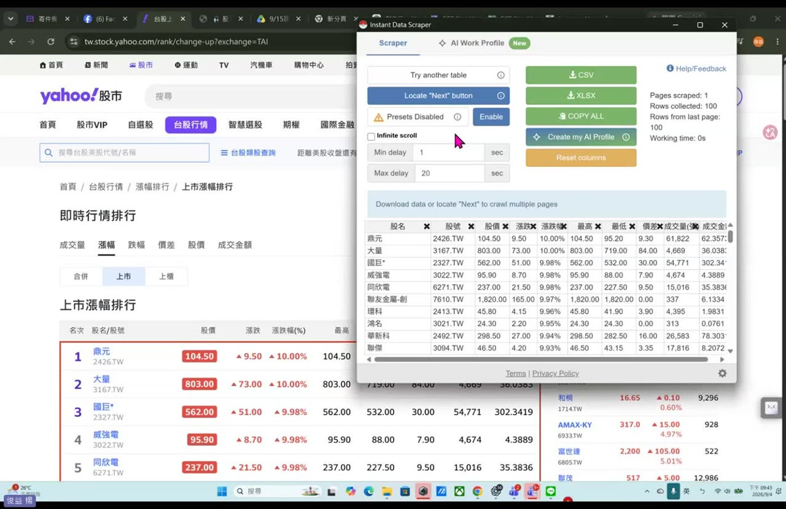
4. 第二步：欄位對應［10:00–17:40］
老師在這一步花了最久，因為錯在這裡，後面全部白做。
操作順序
- 在漲幅排行的頁面上，點一下工具列那顆圓形圖示（老師叫它「寶可夢球」）打開抓取面板
- 面板會鎖定畫面正中央的那張表格，並抓出一堆預設欄位，欄位名稱多半不是中文
- 按 Reset columns 讓它回到原始狀態，再開始一欄一欄改
- 用不到的欄位（例如「連結」）直接按 ✕ 刪掉
- 把留下來的欄位，改成跟網頁上那一欄的名稱一模一樣
- 確認無誤後按 下載 CSV，檔案會存進「下載」資料夾
要對應的欄位
| 欄位 | 說明 |
|---|---|
| 排名 | 名次 |
| 股名 | 公司名稱 |
| 股號 | 股票代號 |
| 股價 | 成交價 |
| 漲跌 | 漲跌金額 |
| 漲跌幅 | 漲跌百分比 |
| 最高 / 最低 / 價差 | 當日高低與價差 |
| 成交量 / 成交金額 | 後面設篩選條件會用到 |
錯的欄位不會報錯，只會安靜地產出錯的分析，這是最難察覺的那種錯。
兩個會卡住的地方
5. 第三步：CSV 匯入與篩選條件［17:44–21:30］
回到釣魚選股 v12，點 CSV 匯入，選剛剛下載的檔案，開啟。這時候會出現篩選條件，這一步決定你的池子裡有幾隻魚。
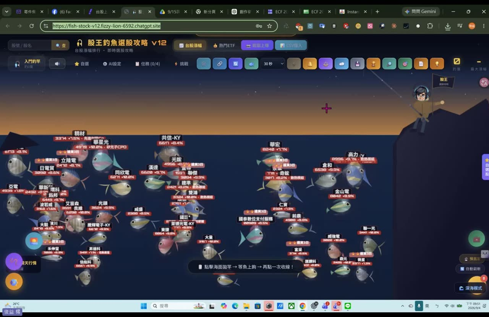
四種選法，對應四種操作風格
| 選法 | 當天實際隻數 | 適合誰 |
|---|---|---|
| 全部 | 符合條件 78 檔（原始抓到 96 檔） | 想看整體盤面 |
| 只要漲停 | 13 檔 | 老師說「你野心比較大」，只要最強的 |
| 強勢股（漲幅 > 5%） | 74 檔 | 當天實際採用的設定，範圍合理 |
| 溫和型 | 依設定 | 不追漲停，找尾盤收斂、看隔日表現的人 |
成交量下限：這條是保命用的
「交易張數太少的你不要，因為這個有時候是炒作。有些股票才一、二十塊，但是它買的量就只有幾百張，這個就不要碰。」
「你買得到，不代表你賣得掉。它漲上來之後你想要脫手，你脫不了。」
還補了一句：「不要見獵心喜，聽到第四台名嘴在報那種只有幾十塊的，最要小心。」
6. 第四步：申請 Groq API 金鑰［22:46–25:00］
先搞懂 API 是什麼
老師用一句話帶過：「API 就是程式跟程式之間的串接。我自己寫了一個程式，想要藉由 AI 的能力，就要去串接一個提供 AI 模型的平台。」
這個平台叫 Groq，上面有很多 AI 模型可以用，而且免費。
怎麼申請
- Google 搜尋 groq api，進到 Groq 的開發者平台
- 用 Google 帳號註冊登入（老師現場給大家 30 秒）
- 建立一把 API Key，複製起來（格式是
gsk_開頭） - 回到釣魚選股 v12，點左上角 AI 設定
- 把 Key 貼進去，分析模型選 GPT-OSS 120B（推薦・文字主力）
- 可以順手填「暱名學分析」的名字，按儲存設定
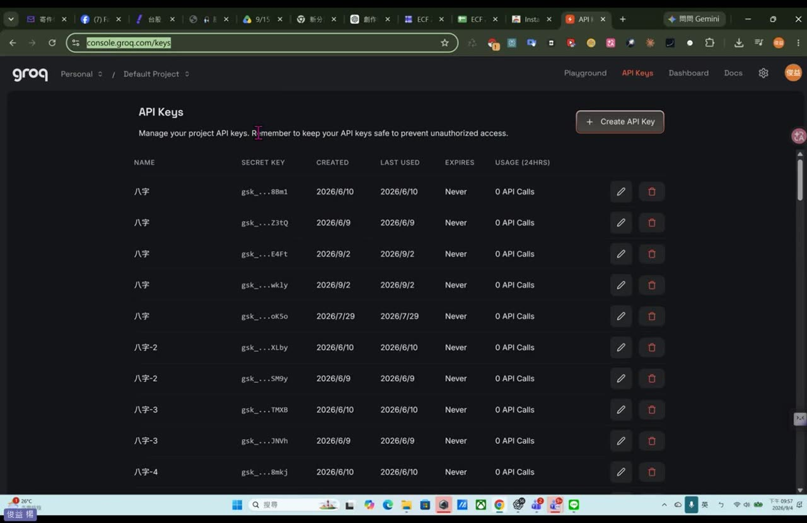
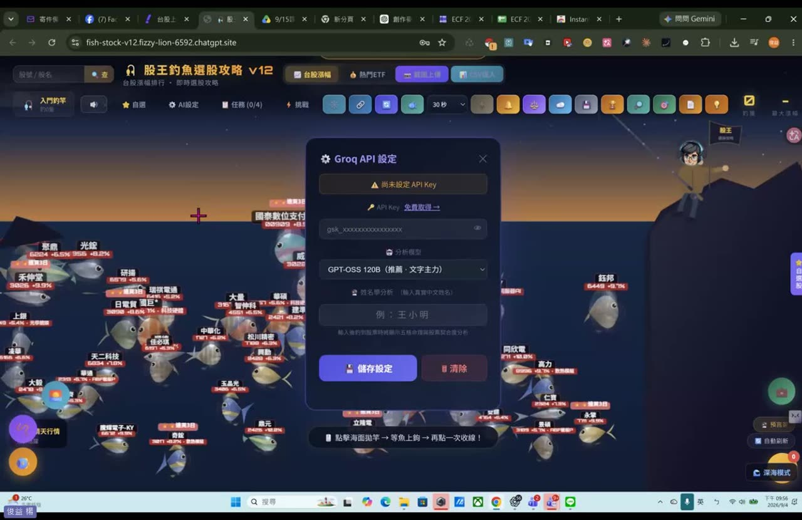
gsk_ 開頭的 API Key，選 GPT-OSS 120B，儲存。旁邊就有「免費取得 →」的連結。［23:01］這也是所有串接第三方 AI 平台的工具都會遇到的事：模型會退役，工具要跟著改。
7. 第五步：釣魚，看 AI 個股分析［28:00 起］
操作只有一句話，畫面下方就寫著：「點擊海面拋竿 → 等魚上鉤 → 再點一次收線！」釣到哪一隻，就對那一檔跑一次 AI 分析。
分析面板裡有什麼
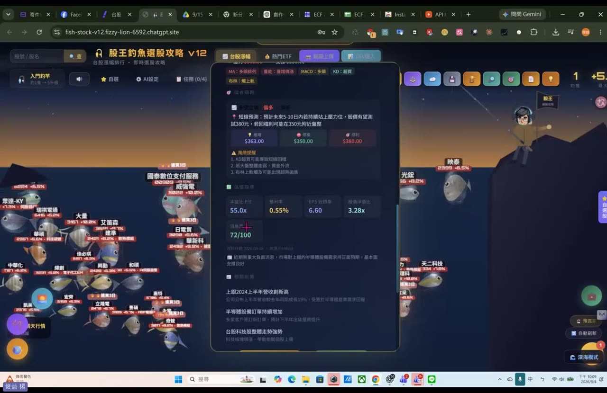
- 技術指標標籤：MA 多頭排列、量能、MACD、KD、布林通道位置，一眼掃過去就知道這檔現在什麼狀態
- 短線預測：一段白話文，例如「預計未來 5–10 日若持續站上壓力位，股價有望測試 380 元；若回檔則可能在 350 元附近盤整」
- 三個價位卡：壓力、停損、停利
- 風險提醒：條列這檔目前的風險，例如 KD 進入超買、外資賣超、布林上軌乘載過熱
- 基本面指標：本益比、殖利率、EPS、股價淨值比
- 消息面分數：以 100 分為滿分的量化分數，附一句話說明
- 相關新聞：抓當期的產業與個股新聞標題
8. 交叉查證：回頭看 Yahoo 與 K 線［39:00 起］
老師沒有停在工具裡面。整堂課他反覆做同一件事：工具給了結論，就回去原始網站看一眼對不對。
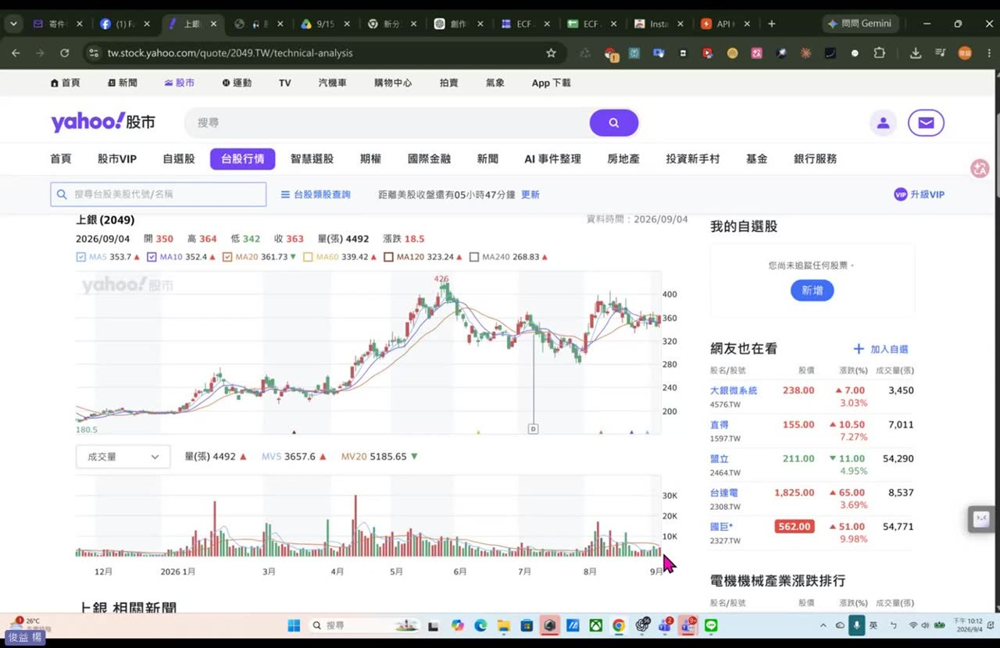
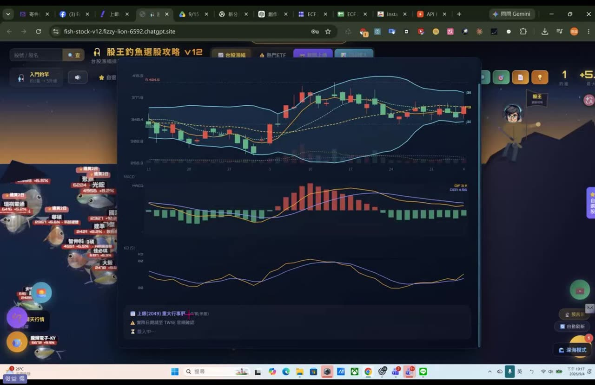
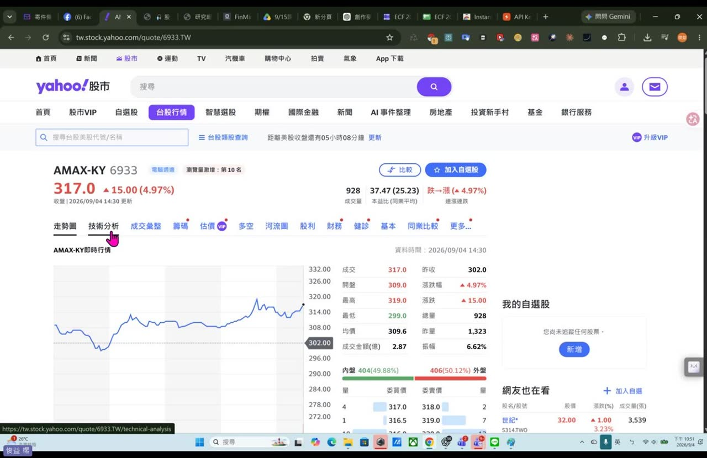
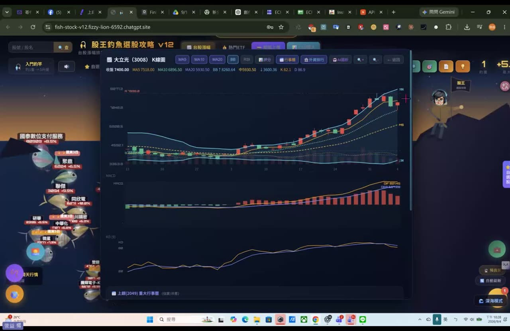
- 工具裡每一檔都有 K 線圖 按鈕，直接叫出布林通道、MACD、KD
- 下方會標重大事實，並註明資料日期溯至證交所官網
- 回 Yahoo 股市看同一檔的走勢圖、技術分析、籌碼與基本面
- 老師也開了 FinMind（finmindtrade.com）當作另一個查證來源
9. 產業關聯與供應鏈星系圖［57:00 起］
這是 V12 最有意思的新東西。釣到一檔股票之後，工具會把它放回產業鏈的位置上。
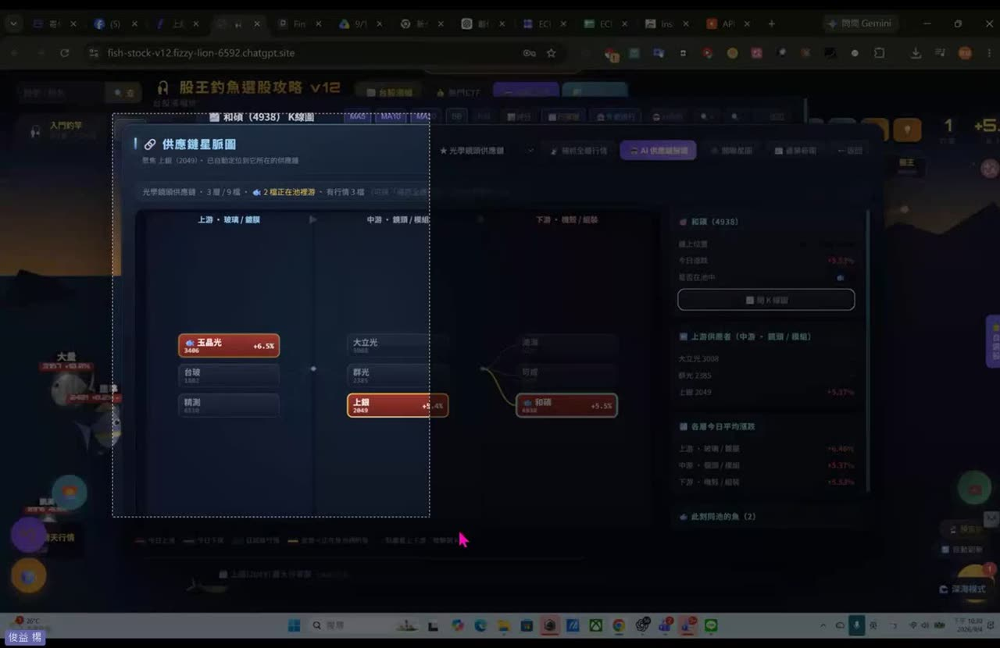
- 供應鏈星脈圖：把個股放到上游、中游、下游的位置，看它在鏈上的哪一段
- 產業關聯星圖：以該檔為中心，畫出同族群相關個股與各自的漲跌
- 各層今日平均漲幅：直接比較上中下游哪一段在動
- 此鏈同池的魚：告訴你今天池子裡還有哪幾隻是同一條鏈上的
10. 一鍵研究報告 PDF［66:30 起］
把上面所有東西打包成一份可以存檔、可以傳給別人的 PDF。
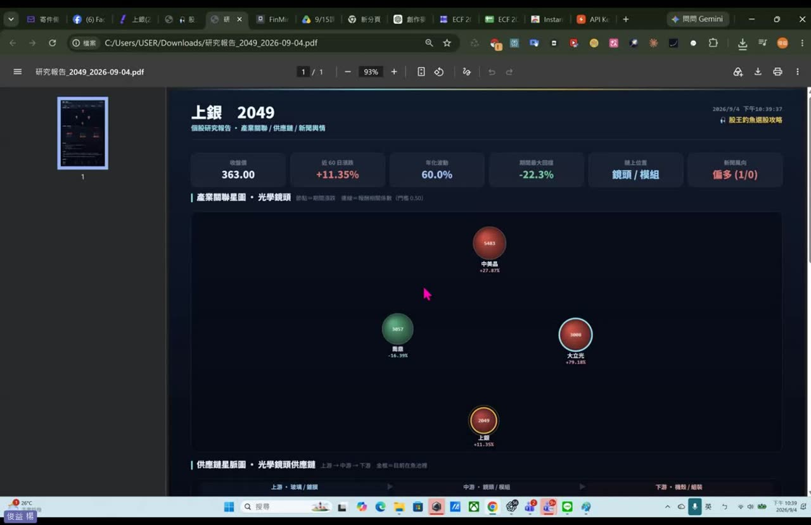
- 檔名格式是
研究報告_股號_日期.pdf，直接下載到本機 - 六個指標卡：目標價、近 60 日漲跌、年化波動、期間最大回撤、鏈上位置、新聞風向
- 「期間最大回撤」這欄很重要，它告訴你這檔過去最慘掉過多少
12. AI 釣魚教練［124:00 起］
釣到一檔之後可以直接跟 AI 對話，它已經把那檔的資料讀進去了。
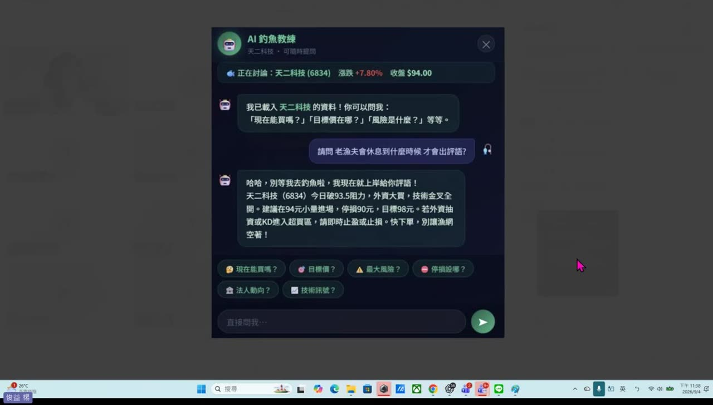
- 六個快捷問題：現在能買嗎、目標價、最大風險、停損設哪、法人動向、技術訊號
- 也可以直接打字問，它會用釣魚的比喻回答
- 回答會給出具體數字，例如進場價、停損價、目標價與觸發條件
13. 老師的提醒與風險界線
這堂課有一段老師講得非常誠實，值得完整留下來。
- 老師說他自己確實有買釣到的股票，但不是每一檔都買，也不可能 all in
- 他把這件事定位成「閒錢投資」：閒錢放著，也許會有一筆額外的收穫
- 反覆強調成交量太小的不要碰、名嘴報的低價股最要小心
14. 老師金句
15. 資料來源與整理說明
- 原始教材：Google Drive 資料夾「釣魚選股補充課程」，內含課堂錄影一段（2 小時 15 分 06 秒、1920×1080），加上單檔工具
釣魚選股_v12.html。 - 整理方法：錄影用 ffmpeg 做場景偵測（偵測到 332 處切換）＋每 60 秒固定補抓，經去重後保留 93 張關鍵畫面；同時用 faster-whisper large-v3-turbo 產出全程逐字稿（切 120 秒一段辨識，標點率偏低的段落自動切 60 秒重跑），兩者交叉比對後撰寫。
- 可信度標註：本頁畫面截圖與功能名稱皆為錄影實錄；操作步驟為逐幀還原；引號內的老師發言取自逐字稿，已修正可確定的辨識錯字（人名、工具名），不確定的一律保留原樣。
- 隱私處理：所有截圖已裁掉錄影右側的 Teams 參與者名單；露出學員姓名的畫面另行裁切，整頁皆為學員頭像與聊天內容的畫面不採用。
- 未收錄：逐字稿全文與工具檔本身不放在公開頁面；老師課堂上提供的工具共用網址亦未刊出，要不要對外流通由老師決定。
- 本堂沒有課後作業，重點在跟著把整條資料流走一遍。